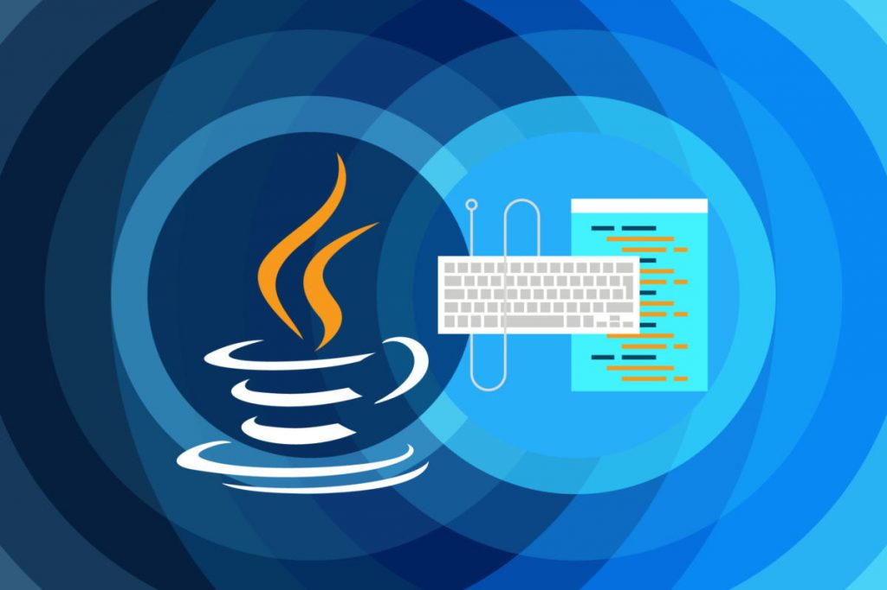

<div class="main-div">
  <ul class="nav justify-content-end">
    <li class="nav-item">
      <a class="nav-link active" aria-current="page" routerLink="OOP-Part01"
        >OOP-Part01</a
      >
    </li>
    <li class="nav-item">
      <a class="nav-link" routerLink="http-post">Reference_x_Object_x_Instance_x_Class</a>
    </li>
    <!-- <li class="nav-item">
      <a class="nav-link" routerLink="http-get">Http Get</a>
    </li>
    <li class="nav-item">
      <a class="nav-link" routerLink="http-delete">Http Delete</a>
    </li>
    <li class="nav-item">
      <a class="nav-link" routerLink="http-put">Http Put</a>
      C:\_Java\E_Book_Class_Back_Java17\tonyClass\src\app\java
    </li> -->
  </ul>

  <div class="container container-fluid image">
    <main>
      <div class="row">
        <div class="col-xs-12">
          <div class="d-grid gap-2 d-md-flex justify-content-md-end">
            <button
              type="button"
              class="btn btn-outline-light"
              routerLink="/body"
            >
              Back Home
            </button>
          </div>
        </div>
      </div>
      <div class="row">
        <div class="col-xs-12 local-image">
          <h2>Everything you need to know about the Java 17</h2>
        </div>
        <div class="col-xs-12">
          <div class="local-image">
            
          </div>
        </div>
      </div>
    </main>
  </div>
</div>
